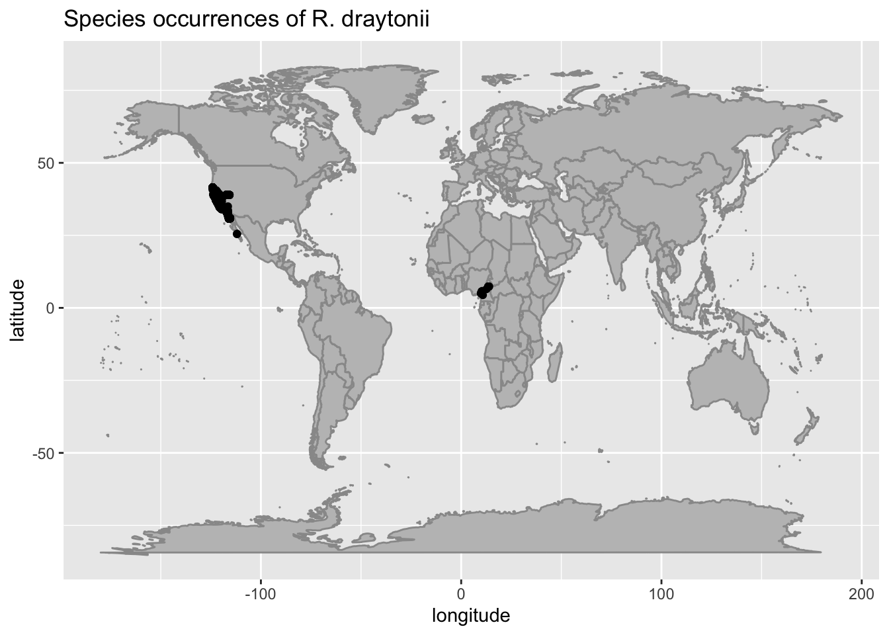

<!DOCTYPE html>
<html xmlns="http://www.w3.org/1999/xhtml" lang="en" xml:lang="en"><head>

<meta charset="utf-8">
<meta name="generator" content="quarto-1.2.335">

<meta name="viewport" content="width=device-width, initial-scale=1.0, user-scalable=yes">


<title>data_aquisition_cleaning</title>
<style>
code{white-space: pre-wrap;}
span.smallcaps{font-variant: small-caps;}
div.columns{display: flex; gap: min(4vw, 1.5em);}
div.column{flex: auto; overflow-x: auto;}
div.hanging-indent{margin-left: 1.5em; text-indent: -1.5em;}
ul.task-list{list-style: none;}
ul.task-list li input[type="checkbox"] {
  width: 0.8em;
  margin: 0 0.8em 0.2em -1.6em;
  vertical-align: middle;
}
pre > code.sourceCode { white-space: pre; position: relative; }
pre > code.sourceCode > span { display: inline-block; line-height: 1.25; }
pre > code.sourceCode > span:empty { height: 1.2em; }
.sourceCode { overflow: visible; }
code.sourceCode > span { color: inherit; text-decoration: inherit; }
div.sourceCode { margin: 1em 0; }
pre.sourceCode { margin: 0; }
@media screen {
div.sourceCode { overflow: auto; }
}
@media print {
pre > code.sourceCode { white-space: pre-wrap; }
pre > code.sourceCode > span { text-indent: -5em; padding-left: 5em; }
}
pre.numberSource code
  { counter-reset: source-line 0; }
pre.numberSource code > span
  { position: relative; left: -4em; counter-increment: source-line; }
pre.numberSource code > span > a:first-child::before
  { content: counter(source-line);
    position: relative; left: -1em; text-align: right; vertical-align: baseline;
    border: none; display: inline-block;
    -webkit-touch-callout: none; -webkit-user-select: none;
    -khtml-user-select: none; -moz-user-select: none;
    -ms-user-select: none; user-select: none;
    padding: 0 4px; width: 4em;
    color: #aaaaaa;
  }
pre.numberSource { margin-left: 3em; border-left: 1px solid #aaaaaa;  padding-left: 4px; }
div.sourceCode
  {   }
@media screen {
pre > code.sourceCode > span > a:first-child::before { text-decoration: underline; }
}
code span.al { color: #ff0000; font-weight: bold; } /* Alert */
code span.an { color: #60a0b0; font-weight: bold; font-style: italic; } /* Annotation */
code span.at { color: #7d9029; } /* Attribute */
code span.bn { color: #40a070; } /* BaseN */
code span.bu { color: #008000; } /* BuiltIn */
code span.cf { color: #007020; font-weight: bold; } /* ControlFlow */
code span.ch { color: #4070a0; } /* Char */
code span.cn { color: #880000; } /* Constant */
code span.co { color: #60a0b0; font-style: italic; } /* Comment */
code span.cv { color: #60a0b0; font-weight: bold; font-style: italic; } /* CommentVar */
code span.do { color: #ba2121; font-style: italic; } /* Documentation */
code span.dt { color: #902000; } /* DataType */
code span.dv { color: #40a070; } /* DecVal */
code span.er { color: #ff0000; font-weight: bold; } /* Error */
code span.ex { } /* Extension */
code span.fl { color: #40a070; } /* Float */
code span.fu { color: #06287e; } /* Function */
code span.im { color: #008000; font-weight: bold; } /* Import */
code span.in { color: #60a0b0; font-weight: bold; font-style: italic; } /* Information */
code span.kw { color: #007020; font-weight: bold; } /* Keyword */
code span.op { color: #666666; } /* Operator */
code span.ot { color: #007020; } /* Other */
code span.pp { color: #bc7a00; } /* Preprocessor */
code span.sc { color: #4070a0; } /* SpecialChar */
code span.ss { color: #bb6688; } /* SpecialString */
code span.st { color: #4070a0; } /* String */
code span.va { color: #19177c; } /* Variable */
code span.vs { color: #4070a0; } /* VerbatimString */
code span.wa { color: #60a0b0; font-weight: bold; font-style: italic; } /* Warning */
</style>


<script src="../site_libs/quarto-nav/quarto-nav.js"></script>
<script src="../site_libs/quarto-nav/headroom.min.js"></script>
<script src="../site_libs/clipboard/clipboard.min.js"></script>
<script src="../site_libs/quarto-search/autocomplete.umd.js"></script>
<script src="../site_libs/quarto-search/fuse.min.js"></script>
<script src="../site_libs/quarto-search/quarto-search.js"></script>
<meta name="quarto:offset" content="../">
<script src="../site_libs/quarto-html/quarto.js"></script>
<script src="../site_libs/quarto-html/popper.min.js"></script>
<script src="../site_libs/quarto-html/tippy.umd.min.js"></script>
<script src="../site_libs/quarto-html/anchor.min.js"></script>
<link href="../site_libs/quarto-html/tippy.css" rel="stylesheet">
<link href="../site_libs/quarto-html/quarto-syntax-highlighting.css" rel="stylesheet" id="quarto-text-highlighting-styles">
<script src="../site_libs/bootstrap/bootstrap.min.js"></script>
<link href="../site_libs/bootstrap/bootstrap-icons.css" rel="stylesheet">
<link href="../site_libs/bootstrap/bootstrap.min.css" rel="stylesheet" id="quarto-bootstrap" data-mode="light">
<script id="quarto-search-options" type="application/json">{
  "location": "sidebar",
  "copy-button": false,
  "collapse-after": 3,
  "panel-placement": "start",
  "type": "textbox",
  "limit": 20,
  "language": {
    "search-no-results-text": "No results",
    "search-matching-documents-text": "matching documents",
    "search-copy-link-title": "Copy link to search",
    "search-hide-matches-text": "Hide additional matches",
    "search-more-match-text": "more match in this document",
    "search-more-matches-text": "more matches in this document",
    "search-clear-button-title": "Clear",
    "search-detached-cancel-button-title": "Cancel",
    "search-submit-button-title": "Submit"
  }
}</script>


<link rel="stylesheet" href="../styles.css">
</head>

<body class="nav-sidebar docked">

<div id="quarto-search-results"></div>
  <header id="quarto-header" class="headroom fixed-top">
  <nav class="quarto-secondary-nav" data-bs-toggle="collapse" data-bs-target="#quarto-sidebar" aria-controls="quarto-sidebar" aria-expanded="false" aria-label="Toggle sidebar navigation" onclick="if (window.quartoToggleHeadroom) { window.quartoToggleHeadroom(); }">
    <div class="container-fluid d-flex justify-content-between">
      <h1 class="quarto-secondary-nav-title"></h1>
      <button type="button" class="quarto-btn-toggle btn" aria-label="Show secondary navigation">
        <i class="bi bi-chevron-right"></i>
      </button>
    </div>
  </nav>
</header>
<!-- content -->
<div id="quarto-content" class="quarto-container page-columns page-rows-contents page-layout-article">
<!-- sidebar -->
  <nav id="quarto-sidebar" class="sidebar collapse sidebar-navigation docked overflow-auto">
    <div class="pt-lg-2 mt-2 text-left sidebar-header">
      <a href="../index.html" class="sidebar-logo-link">
      
      </a>
      </div>
      <div class="mt-2 flex-shrink-0 align-items-center">
        <div class="sidebar-search">
        <div id="quarto-search" class="" title="Search"></div>
        </div>
      </div>
    <div class="sidebar-menu-container"> 
    <ul class="list-unstyled mt-1">
        <li class="sidebar-item">
  <div class="sidebar-item-container"> 
  <a href="../home.html" class="sidebar-item-text sidebar-link">Home</a>
  </div>
</li>
        <li class="sidebar-item">
  <div class="sidebar-item-container"> 
  <a href="../Info/our_team.html" class="sidebar-item-text sidebar-link">Our Team</a>
  </div>
</li>
        <li class="sidebar-item">
  <div class="sidebar-item-container"> 
  <a href="../Info/contact_us.html" class="sidebar-item-text sidebar-link">Contact Us</a>
  </div>
</li>
        <li class="sidebar-item">
  <div class="sidebar-item-container"> 
  <a href="../Info/syllabus.html" class="sidebar-item-text sidebar-link">Syllabus</a>
  </div>
</li>
        <li class="sidebar-item">
  <div class="sidebar-item-container"> 
  <a href="../schedule.html" class="sidebar-item-text sidebar-link">Class Schedule</a>
  </div>
</li>
        <li class="sidebar-item sidebar-item-section">
      <div class="sidebar-item-container"> 
            <a class="sidebar-item-text sidebar-link text-start collapsed" data-bs-toggle="collapse" data-bs-target="#quarto-sidebar-section-1" aria-expanded="false">Coding Boot Camp</a>
          <a class="sidebar-item-toggle text-start collapsed" data-bs-toggle="collapse" data-bs-target="#quarto-sidebar-section-1" aria-expanded="false">
            <i class="bi bi-chevron-right ms-2"></i>
          </a> 
      </div>
      <ul id="quarto-sidebar-section-1" class="collapse list-unstyled sidebar-section depth1 ">  
          <li class="sidebar-item">
  <div class="sidebar-item-container"> 
  <a href="../Bootcamp/coding_basics_for_this_course.html" class="sidebar-item-text sidebar-link">Coding Basics</a>
  </div>
</li>
          <li class="sidebar-item">
  <div class="sidebar-item-container"> 
  <a href="../Bootcamp/bootcamp_1.html" class="sidebar-item-text sidebar-link">Bootcamp Lesson 1</a>
  </div>
</li>
          <li class="sidebar-item">
  <div class="sidebar-item-container"> 
  <a href="../Bootcamp/bootcamp_2.html" class="sidebar-item-text sidebar-link">Bootcamp Lesson 2</a>
  </div>
</li>
          <li class="sidebar-item">
  <div class="sidebar-item-container"> 
  <a href="../Bootcamp/bootcamp_3.html" class="sidebar-item-text sidebar-link">Bootcamp Lesson 3</a>
  </div>
</li>
          <li class="sidebar-item">
  <div class="sidebar-item-container"> 
  <a href="../Bootcamp/bootcamp_practice_1.html" class="sidebar-item-text sidebar-link">Bootcamp Practices</a>
  </div>
</li>
      </ul>
  </li>
        <li class="sidebar-item sidebar-item-section">
      <div class="sidebar-item-container"> 
            <a class="sidebar-item-text sidebar-link text-start" data-bs-toggle="collapse" data-bs-target="#quarto-sidebar-section-2" aria-expanded="true">Lessons</a>
          <a class="sidebar-item-toggle text-start" data-bs-toggle="collapse" data-bs-target="#quarto-sidebar-section-2" aria-expanded="true">
            <i class="bi bi-chevron-right ms-2"></i>
          </a> 
      </div>
      <ul id="quarto-sidebar-section-2" class="collapse list-unstyled sidebar-section depth1 show">  
          <li class="sidebar-item">
  <div class="sidebar-item-container"> 
  <a href="../Lessons/lessons.html" class="sidebar-item-text sidebar-link">Lessons</a>
  </div>
</li>
          <li class="sidebar-item">
  <div class="sidebar-item-container"> 
  <a href="../Lessons/data_aquisition_cleaning.html" class="sidebar-item-text sidebar-link active">Querying, cleaning, and mapping GBIF data</a>
  </div>
</li>
          <li class="sidebar-item">
  <div class="sidebar-item-container"> 
  <a href="../Lessons/occ_map.html" class="sidebar-item-text sidebar-link">Occurrence Map</a>
  </div>
</li>
      </ul>
  </li>
        <li class="sidebar-item sidebar-item-section">
      <div class="sidebar-item-container"> 
            <a class="sidebar-item-text sidebar-link text-start collapsed" data-bs-toggle="collapse" data-bs-target="#quarto-sidebar-section-3" aria-expanded="false">Assignments</a>
          <a class="sidebar-item-toggle text-start collapsed" data-bs-toggle="collapse" data-bs-target="#quarto-sidebar-section-3" aria-expanded="false">
            <i class="bi bi-chevron-right ms-2"></i>
          </a> 
      </div>
      <ul id="quarto-sidebar-section-3" class="collapse list-unstyled sidebar-section depth1 ">  
          <li class="sidebar-item">
  <div class="sidebar-item-container"> 
  <a href="../Assignments/assignments.html" class="sidebar-item-text sidebar-link">Assignments</a>
  </div>
</li>
          <li class="sidebar-item">
  <div class="sidebar-item-container"> 
  <a href="../Assignments/HW_1.html" class="sidebar-item-text sidebar-link">HW 1: Data Science Tools</a>
  </div>
</li>
          <li class="sidebar-item">
  <div class="sidebar-item-container"> 
  <a href="../Assignments/HW_2_pt1.html" class="sidebar-item-text sidebar-link">HW 2 (Part 1): Informational Interview</a>
  </div>
</li>
          <li class="sidebar-item">
  <div class="sidebar-item-container"> 
  <a href="../Assignments/HW_2_pt2.html" class="sidebar-item-text sidebar-link">HW 2 (Part 2): Resume</a>
  </div>
</li>
          <li class="sidebar-item">
  <div class="sidebar-item-container"> 
  <a href="../Assignments/HW_3.html" class="sidebar-item-text sidebar-link">HW 3: Practice with GitHub</a>
  </div>
</li>
          <li class="sidebar-item">
  <div class="sidebar-item-container"> 
  <a href="../Assignments/HW_4.html" class="sidebar-item-text sidebar-link">HW 4: Occurrence Map</a>
  </div>
</li>
          <li class="sidebar-item">
  <div class="sidebar-item-container"> 
  <a href="../Assignments/HW_5.html" class="sidebar-item-text sidebar-link">HW 5: Natural History and Taxonomy</a>
  </div>
</li>
          <li class="sidebar-item">
  <div class="sidebar-item-container"> 
  <a href="../Assignments/HW_6.html" class="sidebar-item-text sidebar-link">HW 6: Current &amp; Future SDM</a>
  </div>
</li>
      </ul>
  </li>
        <li class="sidebar-item sidebar-item-section">
      <div class="sidebar-item-container"> 
            <a class="sidebar-item-text sidebar-link text-start collapsed" data-bs-toggle="collapse" data-bs-target="#quarto-sidebar-section-4" aria-expanded="false">Readings</a>
          <a class="sidebar-item-toggle text-start collapsed" data-bs-toggle="collapse" data-bs-target="#quarto-sidebar-section-4" aria-expanded="false">
            <i class="bi bi-chevron-right ms-2"></i>
          </a> 
      </div>
      <ul id="quarto-sidebar-section-4" class="collapse list-unstyled sidebar-section depth1 ">  
          <li class="sidebar-item">
  <div class="sidebar-item-container"> 
  <a href="../Readings/readings.html" class="sidebar-item-text sidebar-link">Readings</a>
  </div>
</li>
          <li class="sidebar-item">
  <div class="sidebar-item-container"> 
  <a href="../Readings/reading_1.html" class="sidebar-item-text sidebar-link">Week 1 Reading</a>
  </div>
</li>
          <li class="sidebar-item">
  <div class="sidebar-item-container"> 
  <a href="../Readings/reading_2.html" class="sidebar-item-text sidebar-link">Week 2 Readings</a>
  </div>
</li>
          <li class="sidebar-item">
  <div class="sidebar-item-container"> 
  <a href="../Readings/reading_3.html" class="sidebar-item-text sidebar-link">Week 3 Readings</a>
  </div>
</li>
          <li class="sidebar-item">
  <div class="sidebar-item-container"> 
  <a href="../Readings/reading_4.html" class="sidebar-item-text sidebar-link">Week 4 Readings</a>
  </div>
</li>
          <li class="sidebar-item">
  <div class="sidebar-item-container"> 
  <a href="../Readings/reading_5.html" class="sidebar-item-text sidebar-link">Week 5 Readings</a>
  </div>
</li>
      </ul>
  </li>
        <li class="sidebar-item sidebar-item-section">
      <div class="sidebar-item-container"> 
            <a class="sidebar-item-text sidebar-link text-start collapsed" data-bs-toggle="collapse" data-bs-target="#quarto-sidebar-section-5" aria-expanded="false">For Instructors</a>
          <a class="sidebar-item-toggle text-start collapsed" data-bs-toggle="collapse" data-bs-target="#quarto-sidebar-section-5" aria-expanded="false">
            <i class="bi bi-chevron-right ms-2"></i>
          </a> 
      </div>
      <ul id="quarto-sidebar-section-5" class="collapse list-unstyled sidebar-section depth1 ">  
          <li class="sidebar-item">
  <div class="sidebar-item-container"> 
  <a href="../For_Instructors/create_website.html" class="sidebar-item-text sidebar-link">Creating Website</a>
  </div>
</li>
          <li class="sidebar-item">
  <div class="sidebar-item-container"> 
  <a href="../For_Instructors/tips.html" class="sidebar-item-text sidebar-link">Tips</a>
  </div>
</li>
      </ul>
  </li>
    </ul>
    </div>
</nav>
<!-- margin-sidebar -->
    <div id="quarto-margin-sidebar" class="sidebar margin-sidebar">
        <nav id="TOC" role="doc-toc" class="toc-active">
    <h2 id="toc-title">On this page</h2>
   
  <ul>
  <li><a href="#querying-cleaning-and-mapping-gbif-data" id="toc-querying-cleaning-and-mapping-gbif-data" class="nav-link active" data-scroll-target="#querying-cleaning-and-mapping-gbif-data">Querying, cleaning, and mapping GBIF data</a>
  <ul class="collapse">
  <li><a href="#in-this-lesson-you-will-learn" id="toc-in-this-lesson-you-will-learn" class="nav-link" data-scroll-target="#in-this-lesson-you-will-learn">In this lesson, you will learn</a></li>
  <li><a href="#what-is-species-occurrence-data" id="toc-what-is-species-occurrence-data" class="nav-link" data-scroll-target="#what-is-species-occurrence-data">What is species occurrence data?</a></li>
  <li><a href="#how-can-we-get-occurrence-data" id="toc-how-can-we-get-occurrence-data" class="nav-link" data-scroll-target="#how-can-we-get-occurrence-data">How can we get occurrence data?</a></li>
  <li><a href="#how-can-we-plot-occurence-data-simply-to-look-for-outliers" id="toc-how-can-we-plot-occurence-data-simply-to-look-for-outliers" class="nav-link" data-scroll-target="#how-can-we-plot-occurence-data-simply-to-look-for-outliers">How can we plot occurence data simply to look for outliers</a></li>
  <li><a href="#how-can-we-clean-our-data" id="toc-how-can-we-clean-our-data" class="nav-link" data-scroll-target="#how-can-we-clean-our-data">How can we clean our data</a></li>
  <li><a href="#writing-our-data-to-a-csv-file" id="toc-writing-our-data-to-a-csv-file" class="nav-link" data-scroll-target="#writing-our-data-to-a-csv-file">Writing our data to a csv file</a></li>
  </ul></li>
  </ul>
</nav>
    </div>
<!-- main -->
<main class="content" id="quarto-document-content">


<section id="querying-cleaning-and-mapping-gbif-data" class="level1">
<h1>Querying, cleaning, and mapping GBIF data</h1>
<section id="in-this-lesson-you-will-learn" class="level3">
<h3 class="anchored" data-anchor-id="in-this-lesson-you-will-learn">In this lesson, you will learn</h3>
<ul>
<li>What species occurrence data is</li>
<li>How to obtain publicly-available occurrence data from GBIF</li>
<li>How to plot occurrence data with ggplot</li>
<li>How to clean occurrence data</li>
</ul>
</section>
<section id="what-is-species-occurrence-data" class="level3">
<h3 class="anchored" data-anchor-id="what-is-species-occurrence-data">What is species occurrence data?</h3>
<p>Occurrence data is a record of where a species was at a given time.</p>
</section>
<section id="how-can-we-get-occurrence-data" class="level3">
<h3 class="anchored" data-anchor-id="how-can-we-get-occurrence-data">How can we get occurrence data?</h3>
<p>We can use the <a href="https://www.gbif.org/">Global Biodiversity Information Facility</a>. Data on GBIF is sourced from a wide variety of places: from users on iNaturalist equipped with a smartphone to museum specimens. You will read more about the accuracy of citizen science collected occurrence data on February 14.</p>
<p>First we need to load the necessary packages. We will use the tidyverse for data cleaning and visualization. We will use a package called spocc, which stands for “interface to SPecies OCCurence data sources.”</p>
<div class="cell">
<div class="sourceCode cell-code" id="cb1"><pre class="sourceCode r code-with-copy"><code class="sourceCode r"><span id="cb1-1"><a href="#cb1-1" aria-hidden="true" tabindex="-1"></a><span class="co">#Install packages from cran, necessary to specify the repos on quarto but not on your local computer copy</span></span>
<span id="cb1-2"><a href="#cb1-2" aria-hidden="true" tabindex="-1"></a><span class="fu">install.packages</span>(<span class="st">"spocc"</span>, <span class="at">repos =</span> <span class="st">"http://cran.us.r-project.org"</span>)</span></code><button title="Copy to Clipboard" class="code-copy-button"><i class="bi"></i></button></pre></div>
<div class="cell-output cell-output-stderr">
<pre><code>Installing package into '/Users/MilaUserAccount/Library/R/x86_64/4.2/library'
(as 'lib' is unspecified)</code></pre>
</div>
<div class="cell-output cell-output-stdout">
<pre><code>
The downloaded binary packages are in
    /var/folders/8_/66ctd00n6b9839b2ghhk1gjw0000gp/T//RtmpfdlBlX/downloaded_packages</code></pre>
</div>
<div class="sourceCode cell-code" id="cb4"><pre class="sourceCode r code-with-copy"><code class="sourceCode r"><span id="cb4-1"><a href="#cb4-1" aria-hidden="true" tabindex="-1"></a><span class="fu">install.packages</span>(<span class="st">"tidyverse"</span>, <span class="at">repos =</span> <span class="st">"http://cran.us.r-project.org"</span>) <span class="co">#includes ggplot</span></span></code><button title="Copy to Clipboard" class="code-copy-button"><i class="bi"></i></button></pre></div>
<div class="cell-output cell-output-stderr">
<pre><code>Installing package into '/Users/MilaUserAccount/Library/R/x86_64/4.2/library'
(as 'lib' is unspecified)</code></pre>
</div>
<div class="cell-output cell-output-stdout">
<pre><code>
The downloaded binary packages are in
    /var/folders/8_/66ctd00n6b9839b2ghhk1gjw0000gp/T//RtmpfdlBlX/downloaded_packages</code></pre>
</div>
</div>
<p>Load libraries</p>
<div class="cell">
<div class="sourceCode cell-code" id="cb7"><pre class="sourceCode r code-with-copy"><code class="sourceCode r"><span id="cb7-1"><a href="#cb7-1" aria-hidden="true" tabindex="-1"></a><span class="fu">library</span>(spocc)</span>
<span id="cb7-2"><a href="#cb7-2" aria-hidden="true" tabindex="-1"></a><span class="fu">library</span>(tidyverse)</span></code><button title="Copy to Clipboard" class="code-copy-button"><i class="bi"></i></button></pre></div>
<div class="cell-output cell-output-stderr">
<pre><code>── Attaching core tidyverse packages ──────────────────────── tidyverse 2.0.0 ──
✔ dplyr     1.1.0     ✔ readr     2.1.4
✔ forcats   1.0.0     ✔ stringr   1.5.0
✔ ggplot2   3.4.1     ✔ tibble    3.2.0
✔ lubridate 1.9.2     ✔ tidyr     1.3.0
✔ purrr     1.0.1     
── Conflicts ────────────────────────────────────────── tidyverse_conflicts() ──
✖ dplyr::filter() masks stats::filter()
✖ dplyr::lag()    masks stats::lag()
ℹ Use the ]8;;http://conflicted.r-lib.org/conflicted package]8;; to force all conflicts to become errors</code></pre>
</div>
</div>
<p>Remember to use lots of comments on your own copy of this code, to help yourself remember later on!</p>
<p>We can directly query occurrence data in R with the “occ” function, which is part of the spocc package.Take a look at the <a href="https://www.rdocumentation.org/packages/spocc/versions/0.1.0/topics/occ">documentation</a>. In groups: write a query for <em>Rana draytonii</em> from GBIF, from any country during any time period. Limit it to 5000 occurrences.</p>
<div class="cell">
<div class="sourceCode cell-code" id="cb9"><pre class="sourceCode r code-with-copy"><code class="sourceCode r"><span id="cb9-1"><a href="#cb9-1" aria-hidden="true" tabindex="-1"></a>myQuery <span class="ot">&lt;-</span><span class="fu">occ</span>(<span class="at">query=</span><span class="st">"Rana draytonii"</span>, <span class="at">from=</span><span class="st">"gbif"</span>, <span class="at">limit=</span><span class="dv">5000</span>)</span>
<span id="cb9-2"><a href="#cb9-2" aria-hidden="true" tabindex="-1"></a>myQuery</span></code><button title="Copy to Clipboard" class="code-copy-button"><i class="bi"></i></button></pre></div>
<div class="cell-output cell-output-stdout">
<pre><code>Searched: gbif
Occurrences - Found: 4,611, Returned: 4,611
Search type: Scientific
  gbif: Rana draytonii (4611)</code></pre>
</div>
</div>
<p>Great! Now we have our query. We need to access the actual data from GBIF. We will use the “$” to navigate the layers of this data.</p>
<div class="cell">
<div class="sourceCode cell-code" id="cb11"><pre class="sourceCode r code-with-copy"><code class="sourceCode r"><span id="cb11-1"><a href="#cb11-1" aria-hidden="true" tabindex="-1"></a>rana <span class="ot">&lt;-</span> myQuery<span class="sc">$</span>gbif<span class="sc">$</span>data<span class="sc">$</span>Rana_draytonii</span></code><button title="Copy to Clipboard" class="code-copy-button"><i class="bi"></i></button></pre></div>
</div>
</section>
<section id="how-can-we-plot-occurence-data-simply-to-look-for-outliers" class="level3">
<h3 class="anchored" data-anchor-id="how-can-we-plot-occurence-data-simply-to-look-for-outliers">How can we plot occurence data simply to look for outliers</h3>
<p>Let’s initially plot this data on a map. It can be especially useful with species occurrence data to look at the distribution on a world map to find any outliers. We will use the map data in ggplot2 to add country lines as well. We’ll go into more detail in the next lesson about using ggplot2 for an occurrence map.</p>
<div class="cell">
<div class="sourceCode cell-code" id="cb12"><pre class="sourceCode r code-with-copy"><code class="sourceCode r"><span id="cb12-1"><a href="#cb12-1" aria-hidden="true" tabindex="-1"></a>wrld<span class="ot">&lt;-</span>ggplot2<span class="sc">::</span><span class="fu">map_data</span>(<span class="st">"world"</span>) <span class="co"># obtaining world borders</span></span>
<span id="cb12-2"><a href="#cb12-2" aria-hidden="true" tabindex="-1"></a></span>
<span id="cb12-3"><a href="#cb12-3" aria-hidden="true" tabindex="-1"></a><span class="fu">ggplot</span>()<span class="sc">+</span></span>
<span id="cb12-4"><a href="#cb12-4" aria-hidden="true" tabindex="-1"></a>  <span class="fu">geom_polygon</span>(<span class="at">data=</span>wrld, <span class="at">mapping=</span><span class="fu">aes</span>(<span class="at">x=</span>long, <span class="at">y=</span>lat, <span class="at">group=</span>group), <span class="at">fill=</span><span class="st">"grey75"</span>, <span class="at">colour=</span><span class="st">"grey60"</span>)<span class="sc">+</span></span>
<span id="cb12-5"><a href="#cb12-5" aria-hidden="true" tabindex="-1"></a>  <span class="fu">geom_point</span>(<span class="at">data=</span>rana, <span class="at">mapping=</span><span class="fu">aes</span>(<span class="at">x=</span>longitude, <span class="at">y=</span>latitude), <span class="at">show.legend=</span><span class="cn">FALSE</span>)<span class="sc">+</span></span>
<span id="cb12-6"><a href="#cb12-6" aria-hidden="true" tabindex="-1"></a>  <span class="fu">labs</span>(<span class="at">title=</span><span class="st">"Species occurrences of R. draytonii"</span>, <span class="at">x=</span><span class="st">"longitude"</span>, <span class="at">y=</span><span class="st">"latitude"</span>)</span></code><button title="Copy to Clipboard" class="code-copy-button"><i class="bi"></i></button></pre></div>
<div class="cell-output cell-output-stderr">
<pre><code>Warning: Removed 1738 rows containing missing values (`geom_point()`).</code></pre>
</div>
<div class="cell-output-display">
<p></p>
</div>
</div>
</section>
<section id="how-can-we-clean-our-data" class="level3">
<h3 class="anchored" data-anchor-id="how-can-we-clean-our-data">How can we clean our data</h3>
<p>Now we want to clean our data. What do we need to do based on the reading for today? We need to: remove outliers (outside of normal sp range), remove duplicates, and deal with NA values. Looking at the map, we can see there are a few points in Africa. This is likely due to a recording error of the location, as they are near (0,0). We can also remove them on the basis of pre-existing knowledge that these frogs are only found in the southwestern United States. We are going to use the pipe %&gt;% to string together a series of commands.</p>
<div class="cell">
<div class="sourceCode cell-code" id="cb14"><pre class="sourceCode r code-with-copy"><code class="sourceCode r"><span id="cb14-1"><a href="#cb14-1" aria-hidden="true" tabindex="-1"></a>cleanRana <span class="ot">&lt;-</span> rana <span class="sc">%&gt;%</span> </span>
<span id="cb14-2"><a href="#cb14-2" aria-hidden="true" tabindex="-1"></a>  <span class="fu">filter</span>(longitude <span class="sc">&lt;</span> <span class="dv">0</span>) <span class="sc">%&gt;%</span>  <span class="co"># this is one way of removing the pts in Africa</span></span>
<span id="cb14-3"><a href="#cb14-3" aria-hidden="true" tabindex="-1"></a>  <span class="fu">filter</span>(latitude <span class="sc">!=</span> <span class="st">"NA"</span>, longitude <span class="sc">!=</span> <span class="st">"NA"</span>) <span class="sc">%&gt;%</span>  <span class="co"># remove places where lat or long are NA</span></span>
<span id="cb14-4"><a href="#cb14-4" aria-hidden="true" tabindex="-1"></a>  <span class="fu">filter</span>(occurrenceStatus <span class="sc">==</span> <span class="st">"PRESENT"</span>) <span class="sc">%&gt;%</span> </span>
<span id="cb14-5"><a href="#cb14-5" aria-hidden="true" tabindex="-1"></a>  <span class="fu">mutate</span>(<span class="at">location =</span> <span class="fu">paste</span>(latitude, longitude, dateIdentified, <span class="at">sep =</span> <span class="st">"/"</span>)) <span class="sc">%&gt;%</span> <span class="co"># remove duplicates: create a new column that states the location and time</span></span>
<span id="cb14-6"><a href="#cb14-6" aria-hidden="true" tabindex="-1"></a>  <span class="fu">distinct</span>(location, <span class="at">.keep_all =</span> <span class="cn">TRUE</span>) <span class="co"># remove duplicates: keep only one per duplicated entry</span></span></code><button title="Copy to Clipboard" class="code-copy-button"><i class="bi"></i></button></pre></div>
</div>
<p>Our data, cleanRana, has over 140 columns! That is a lot of information that we do not need. We are going to pick out only the columns we need.</p>
<div class="cell">
<div class="sourceCode cell-code" id="cb15"><pre class="sourceCode r code-with-copy"><code class="sourceCode r"><span id="cb15-1"><a href="#cb15-1" aria-hidden="true" tabindex="-1"></a>cleanRanaSubset <span class="ot">&lt;-</span> cleanRana <span class="sc">%&gt;%</span> </span>
<span id="cb15-2"><a href="#cb15-2" aria-hidden="true" tabindex="-1"></a>  <span class="fu">select</span>(longitude, latitude, eventDate)</span></code><button title="Copy to Clipboard" class="code-copy-button"><i class="bi"></i></button></pre></div>
</div>
</section>
<section id="writing-our-data-to-a-csv-file" class="level3">
<h3 class="anchored" data-anchor-id="writing-our-data-to-a-csv-file">Writing our data to a csv file</h3>
<p>Lastly, we are going to write our clean data to a csv file so we can use it in later lessons.</p>
<div class="cell">
<div class="sourceCode cell-code" id="cb16"><pre class="sourceCode r code-with-copy"><code class="sourceCode r"><span id="cb16-1"><a href="#cb16-1" aria-hidden="true" tabindex="-1"></a><span class="fu">write.csv</span>(cleanRanaSubset, <span class="st">"ranaData.csv"</span>)</span></code><button title="Copy to Clipboard" class="code-copy-button"><i class="bi"></i></button></pre></div>
</div>
<p>Great job!</p>


</section>
</section>

</main> <!-- /main -->
<script id="quarto-html-after-body" type="application/javascript">
window.document.addEventListener("DOMContentLoaded", function (event) {
  const toggleBodyColorMode = (bsSheetEl) => {
    const mode = bsSheetEl.getAttribute("data-mode");
    const bodyEl = window.document.querySelector("body");
    if (mode === "dark") {
      bodyEl.classList.add("quarto-dark");
      bodyEl.classList.remove("quarto-light");
    } else {
      bodyEl.classList.add("quarto-light");
      bodyEl.classList.remove("quarto-dark");
    }
  }
  const toggleBodyColorPrimary = () => {
    const bsSheetEl = window.document.querySelector("link#quarto-bootstrap");
    if (bsSheetEl) {
      toggleBodyColorMode(bsSheetEl);
    }
  }
  toggleBodyColorPrimary();  
  const icon = "";
  const anchorJS = new window.AnchorJS();
  anchorJS.options = {
    placement: 'right',
    icon: icon
  };
  anchorJS.add('.anchored');
  const clipboard = new window.ClipboardJS('.code-copy-button', {
    target: function(trigger) {
      return trigger.previousElementSibling;
    }
  });
  clipboard.on('success', function(e) {
    // button target
    const button = e.trigger;
    // don't keep focus
    button.blur();
    // flash "checked"
    button.classList.add('code-copy-button-checked');
    var currentTitle = button.getAttribute("title");
    button.setAttribute("title", "Copied!");
    let tooltip;
    if (window.bootstrap) {
      button.setAttribute("data-bs-toggle", "tooltip");
      button.setAttribute("data-bs-placement", "left");
      button.setAttribute("data-bs-title", "Copied!");
      tooltip = new bootstrap.Tooltip(button, 
        { trigger: "manual", 
          customClass: "code-copy-button-tooltip",
          offset: [0, -8]});
      tooltip.show();    
    }
    setTimeout(function() {
      if (tooltip) {
        tooltip.hide();
        button.removeAttribute("data-bs-title");
        button.removeAttribute("data-bs-toggle");
        button.removeAttribute("data-bs-placement");
      }
      button.setAttribute("title", currentTitle);
      button.classList.remove('code-copy-button-checked');
    }, 1000);
    // clear code selection
    e.clearSelection();
  });
  function tippyHover(el, contentFn) {
    const config = {
      allowHTML: true,
      content: contentFn,
      maxWidth: 500,
      delay: 100,
      arrow: false,
      appendTo: function(el) {
          return el.parentElement;
      },
      interactive: true,
      interactiveBorder: 10,
      theme: 'quarto',
      placement: 'bottom-start'
    };
    window.tippy(el, config); 
  }
  const noterefs = window.document.querySelectorAll('a[role="doc-noteref"]');
  for (var i=0; i<noterefs.length; i++) {
    const ref = noterefs[i];
    tippyHover(ref, function() {
      // use id or data attribute instead here
      let href = ref.getAttribute('data-footnote-href') || ref.getAttribute('href');
      try { href = new URL(href).hash; } catch {}
      const id = href.replace(/^#\/?/, "");
      const note = window.document.getElementById(id);
      return note.innerHTML;
    });
  }
  const findCites = (el) => {
    const parentEl = el.parentElement;
    if (parentEl) {
      const cites = parentEl.dataset.cites;
      if (cites) {
        return {
          el,
          cites: cites.split(' ')
        };
      } else {
        return findCites(el.parentElement)
      }
    } else {
      return undefined;
    }
  };
  var bibliorefs = window.document.querySelectorAll('a[role="doc-biblioref"]');
  for (var i=0; i<bibliorefs.length; i++) {
    const ref = bibliorefs[i];
    const citeInfo = findCites(ref);
    if (citeInfo) {
      tippyHover(citeInfo.el, function() {
        var popup = window.document.createElement('div');
        citeInfo.cites.forEach(function(cite) {
          var citeDiv = window.document.createElement('div');
          citeDiv.classList.add('hanging-indent');
          citeDiv.classList.add('csl-entry');
          var biblioDiv = window.document.getElementById('ref-' + cite);
          if (biblioDiv) {
            citeDiv.innerHTML = biblioDiv.innerHTML;
          }
          popup.appendChild(citeDiv);
        });
        return popup.innerHTML;
      });
    }
  }
});
</script>
</div> <!-- /content -->


</body></html>